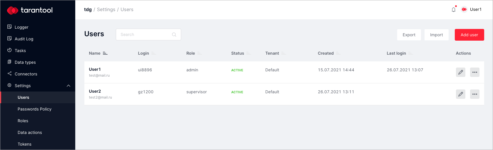
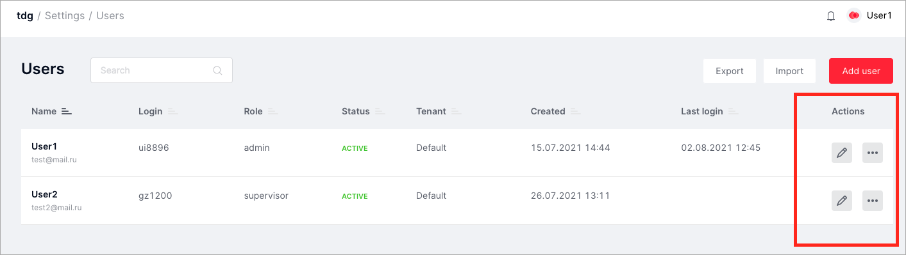
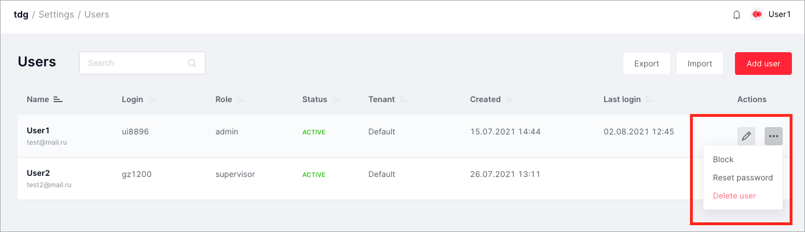
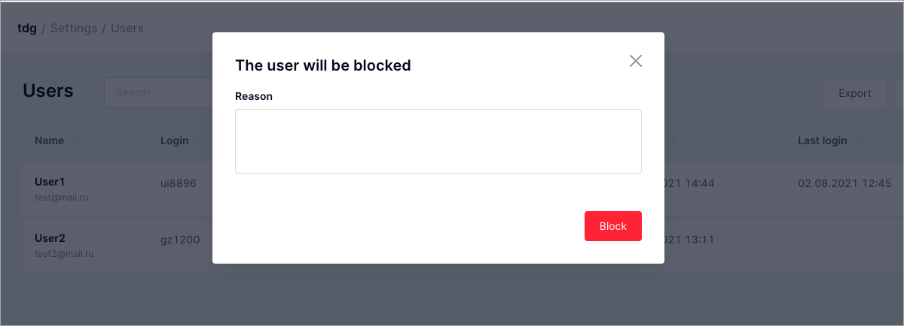
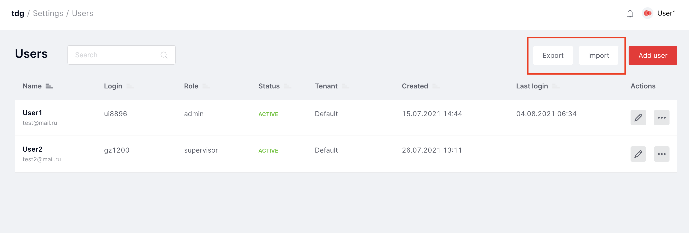
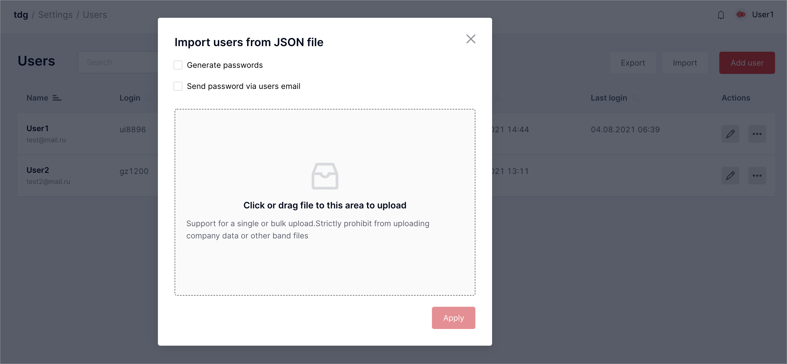
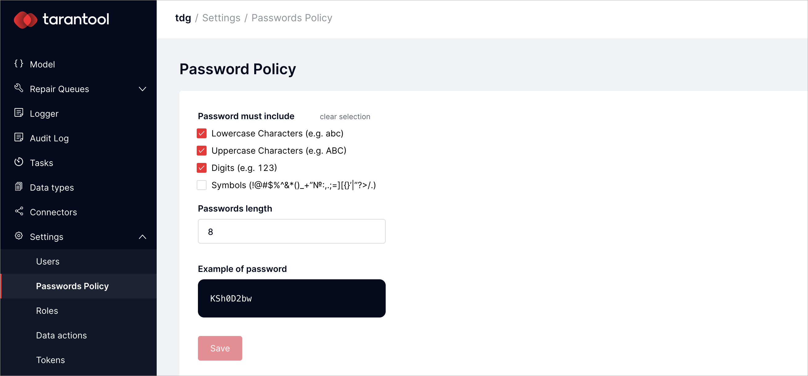

Managing users¶
This chapter describes the TDG user management operations:
The list of users is in the Settings > Users tab:
Creating and editing user profiles¶
Creating a new user¶
To create a new TDG user:
- Switch to the Settings > Users tab. Click Add new user. You will get the New user dialog:
- In the New user dialog, set the following parameters:
Name: user name.Email: user email.Password: a password to log into the system. There are several options here: you can generate a password by clicking Generate or leave an empty field. In the second case, the system will automatically generate and send a password to the user’sEmail, but it requires a configured SMTP server.Expires in: password expiration date. This field is optional. Passwords are checked for expiration approximately every 30 minutes. Accounts with expired passwords are blocked.Role: user role according to the role-based model of access.Tenant: leave the Default parameter unless you have several tenants. In that case, choose the name of the tenant to add the user to.
- Click Submit.
You will now see the new user in the list of users. After you’ve created a user, you can edit the user’s profile: change profile settings, reset password, block or delete the user.
Editing a user profile¶
To edit a user profile, open the Settings > Users tab and click the pencil edit button:
Change profile settings and click Submit.
Deleting a user¶
The administrator can delete any user from the user list:
- In the Actions column, choose the user profile you want to delete, click the
...button, and select Delete user. - In the dialog tab, confirm the deletion of the user by clicking OK.
The deleted user will be automatically removed from the list of users.
Changing user status¶
After you’ve created a user’s profile, it is automatically activated in the system. You’ll see the “ACTIVE” status in the Status column in the list of users. As an administrator, you can change this status and block the user:
In the Actions column, click the
...button and select Block:In the dialog tab, write the reason why you are blocking this user and click Block:

After that, the user’s status will change to “BLOCKED”.
To unblock the user, click the ... button and select Unblock.
Resetting a password¶
The administrator can reset the password of any user:
- In the Actions column, choose the user profile you want to update, click the
...button, and select Reset password. - In the dialog tab, confirm the resetting of the password by clicking OK.
The user will get a temporary password via email that is set in the user’s profile.
Note: to send a temporary password, you need a configured SMTP server.
To set the workflow for sending temporary passwords:
- Install and start the SMTP server.
- In the
config.ymlfile with TDG configuration, write the following settings:
connector:
output:
- name: to_smtp
type: smtp
url: <URL of SMTP server>
from: <sender's address>
timeout: <timeout value, seconds>
account_manager:
only_one_time_passwords: true
output:
name: to_smtp
For example:
output:
- name: to_smtp
type: smtp
url: localhost:2525
from: tdg@example.com
timeout: 5
- Upload the changed configuration to the system.
Exporting and importing users¶
You can export and import user profiles in JSON format:
Exporting users¶
In the Settings > Users tab, click Export. The system will generate and export a JSON file. This file will contain an array with profiles of all current users.
Here is a user profile example:
[
{
"expires_in":2592000,
"login":"ui8896",
"email":"test@mail.ru",
"created_at":1626360261875418600,
"tenant":null,
"state_reason":"test@mail.ru state is changed to active: recover from disabled",
"failed_login_attempts":1,
"uid":"bd2e91f3-ce0f-4ff1-8aae-bc4212f99c7d",
"role":"admin",
"state":"active"
,"username":"User1",
"last_login":1628058891852268000,
"last_password_update_time":null
},
{
...
}
]
Importing users¶
To import users, you need a JSON file with an array of user profiles.
You can make this file manually or generate it as described in the previous topic about the export.
The JSON file must include the fields listed above in the user profile example, except for the fields called
state_reason, last_login, last_password_update_time, password.
As for the password, there are several ways to set it:
- Manually: In the JSON file, set a
passwordfor every user. Make sure the passwords meet the password policy requirements. In the Import users from JSON file dialog, do not check any boxes. The passwords will be uploaded from the JSON file as-is. - Generate passwords: Set
nullin thepasswordfield or don’t include this field in the JSON file at all. In the Import users from JSON file dialog, check the box Generate passwords. The password will be automatically generated according to the current password policy. - Send password via users email: You need a configured SMTP server for this. In the Import users from JSON file dialog, check the Send password via users email box.
You need to choose only one of the listed options for all imported users.
Here is how to import users:
In the Settings > Users tab, click Import.
In the Import users from JSON file dialog, check one of the boxes or leave the boxes empty. It depends on the option you chose to set the users’ passwords.
Upload the JSON file with user profiles and click Apply.
The new user profiles will now be added to the Users list table. The profile data will be shown in the web interface in the message containing the results of the import operation.
You can save the imported data, including the generated passwords, by clicking Download.
The data will be saved as a .csv file.
Managing password policy¶
TDG has a password policy for users to sign into the system. This policy applies to the passwords that users set manually as well as to automatically generated passwords. The administrator can control the password policy in the Settings > Password Policy tab:
Default password settings include lowercase and uppercase characters and digits from 0 to 9, inclusive. The default password length is 8 characters. You can change the default settings and click Save.